Uropeltidae
The family Uropeltidae (shield-tailed snakes) has 65 living species in SnakeList (none venomous), in 8 genera.
- 65living species
- 65non-venomous
- 8genera
About the family
Burrowing snakes found only in southern India and Sri Lanka, named for the shield at the tip of the tail.[1,2]
Sources for this introduction
- Uropeltoidea. Wikipedia.
- Shieldtail snake. Encyclopaedia Britannica.
Information last reviewed 9 November 2026.
Species
Showing 65 species
- No photo yetAnamally Earth SnakeUropeltis macrorhyncha
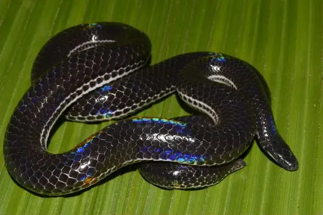
Beddome's Black Earth SnakeMelanophidium punctatum- No photo yetBeddome's Earth SnakeUropeltis beddomii
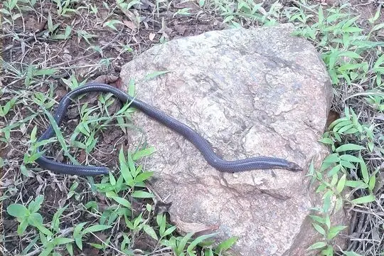
Bhupathy's ShieldtailUropeltis bhupathyi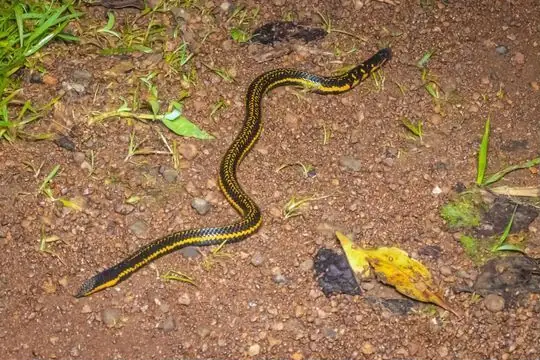
Bicatenate UropeltisUropeltis bicatenata Blyth's Earth SnakeRhinophis blythii
Blyth's Earth SnakeRhinophis blythii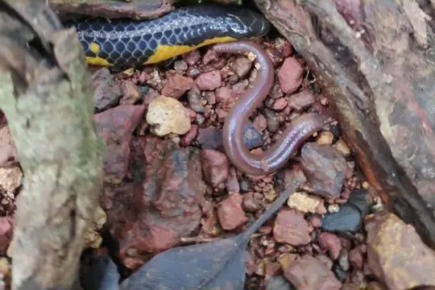
Bombay Earth SnakeUropeltis macrolepis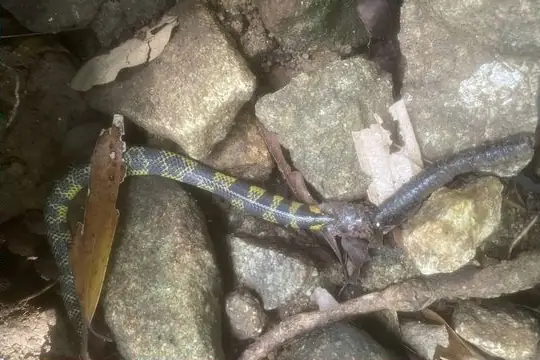
Boulenger's Earth SnakeUropeltis myhendrae- No photo yetBrougham's Earth SnakeUropeltis broughami
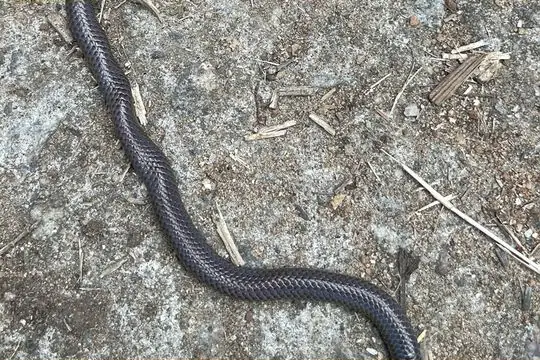
Cardamom Hills Earth SnakeRhinophis fergusonianus Deraniyagala's Earth SnakeRhinophis tricoloratus
Deraniyagala's Earth SnakeRhinophis tricoloratus Drummond-hay's Earth SnakeRhinophis drummondhayi
Drummond-hay's Earth SnakeRhinophis drummondhayi- No photo yetEastern Ghats SnakeRhinophis goweri
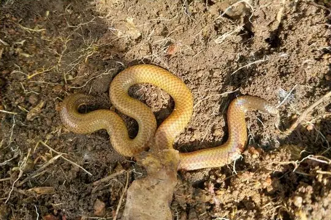
Elliot's Earth SnakeUropeltis ellioti Eranga Viraj's Shieldtail SnakeRhinophis erangaviraji
Eranga Viraj's Shieldtail SnakeRhinophis erangaviraji Gray's Earth SnakeRhinophis melanogaster
Gray's Earth SnakeRhinophis melanogaster- No photo yetGünther's Burrowing SnakePlectrurus guentheri
- No photo yetGünther's Earth SnakeUropeltis liura
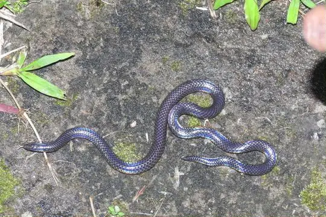
Indian Black Earth SnakeMelanophidium wynaudense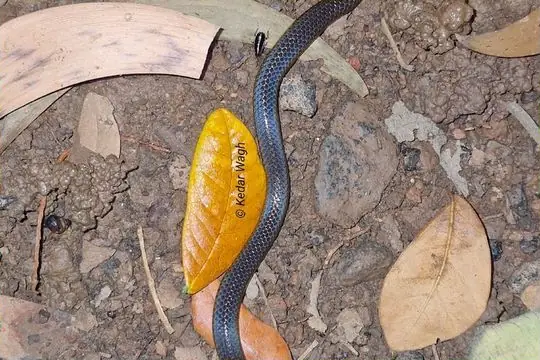
Jerdon’s Shieldtail SnakeUropeltis jerdoni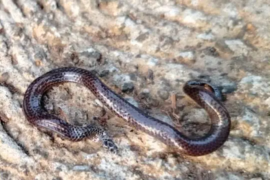
Karinthandan Earth SnakeRhinophis karinthandani- No photo yetKarnataka Burrowing SnakePseudoplectrurus canaricus
- Kerala Burrowing SnakePlectrurus aureus
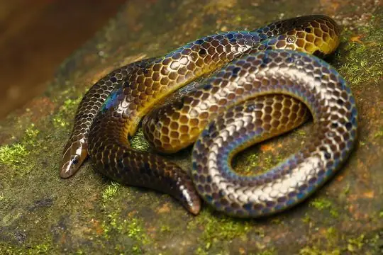
Kerala Burrowing SnakePlecturus aureus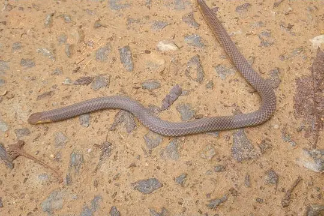
Kerala ShieldtailUropeltis ceylanica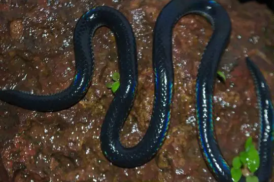
Khaire's Black ShieldtailMelanophidium khairei Large Shieldtail SnakeRhinophis saffragamus
Large Shieldtail SnakeRhinophis saffragamus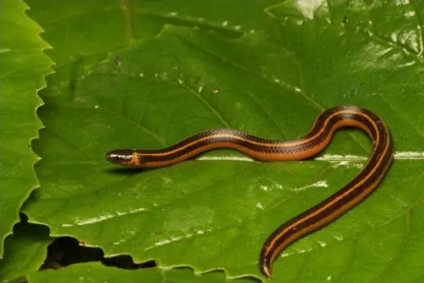
Lined Thorntail SnakePlatyplectrurus trilineatus- No photo yetMadura Earth SnakeUropeltis madurensis
 Matale ShieldtailRhinophis gunasekarai
Matale ShieldtailRhinophis gunasekarai Mendis' ShieldtailRhinophis mendisi
Mendis' ShieldtailRhinophis mendisi Müller's Earth SnakeRhinophis punctatus
Müller's Earth SnakeRhinophis punctatus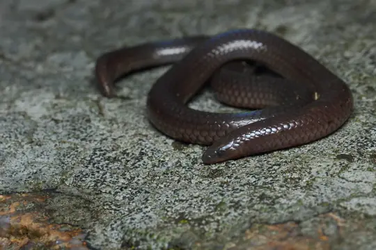
Nilgiri Burrowing SnakePlectrurus perroteti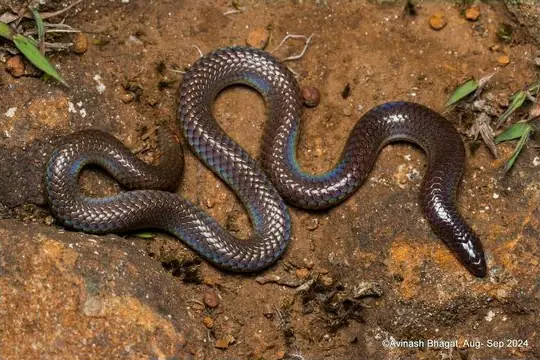
Nilgiri Burrowing SnakePlecturus perroteti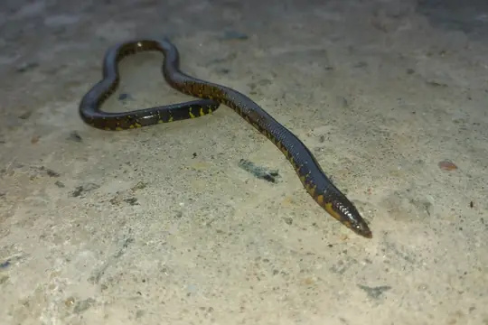
Ocellated Earth SnakeUropeltis ocellata- No photo yetPalni Mountain Burrowing SnakeTeretrurus rhodogaster
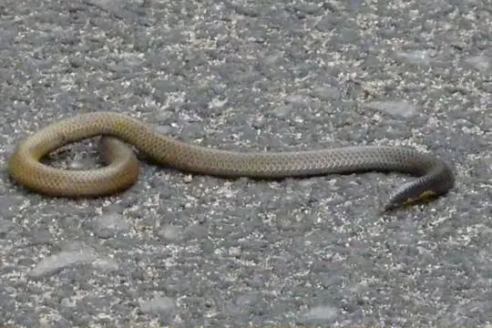
Palni ShieldtailUropeltis pulneyensis Peters' Philippine Earth SnakeRhinophis philippinus
Peters' Philippine Earth SnakeRhinophis philippinus Phillipps' Earth SnakeRhinophis phillipsi
Phillipps' Earth SnakeRhinophis phillipsi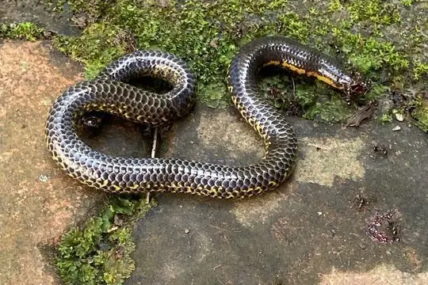
Phipson's ShieldtailUropeltis phipsonii- No photo yetPolkadot Earth SnakeRhinophis dorsimaculatus
- No photo yetPurple-red Earth SnakeTeretrurus sanguineus
- No photo yetRajendran’s Shieldtail SnakeUropeltis rajendrani
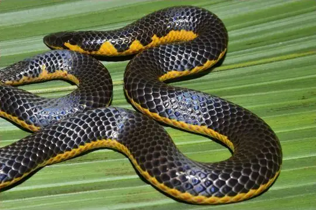
Red-lined Earth SnakeUropeltis rubrolineata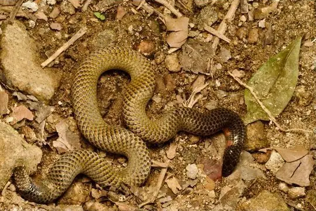
Red-spotted Earth SnakeUropeltis rubromaculata Roshan Perera's ShieldtailRhinophis roshanpererai
Roshan Perera's ShieldtailRhinophis roshanpererai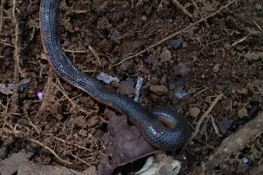
Salty Earth SnakeRhinophis sanguineus Schneider's Earth SnakeRhinophis oxyrhynchus
Schneider's Earth SnakeRhinophis oxyrhynchus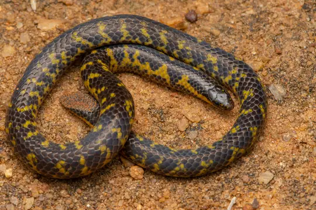
Shevaroy HilIs Earth SnakeUropeltis shorttii- No photo yetShieldtail Earth SnakeUropeltis petersi
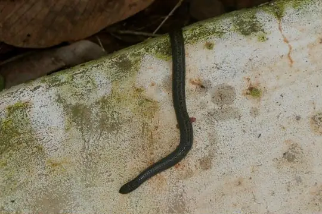
Sirumalai Hills Earth SnakeUropeltis dindigalensis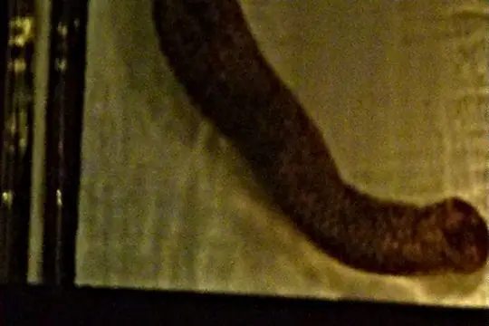
Smith's Earth SnakeUropeltis grandis- No photo yetSouthern Earth SnakeUropeltis nitida
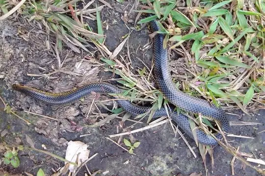
Spotted Earth SnakeUropeltis maculata Striped RhinophisRhinophis lineatus
Striped RhinophisRhinophis lineatus- No photo yetTamil Nadu Earth SnakeRhinophis travancoricus
- No photo yetThree-cusped UropeltisUropeltis tricuspida
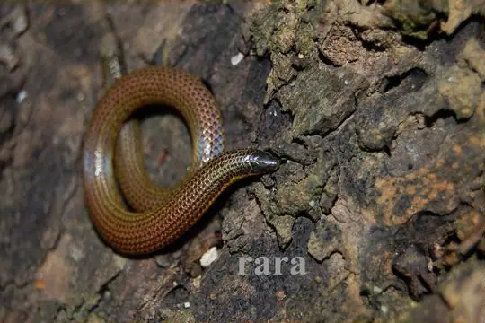
Tirunelveli Earth SnakeUropeltis arcticeps Travancore Hills Thorntail SnakePlatyplectrurus madurensis
Travancore Hills Thorntail SnakePlatyplectrurus madurensis Trevelyan's Earth SnakeRhinophis homolepis
Trevelyan's Earth SnakeRhinophis homolepis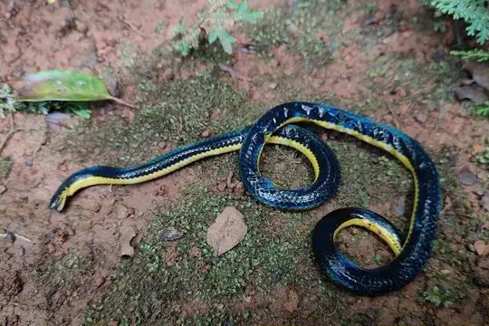
Two-lined Black Earth SnakeMelanophidium bilineatum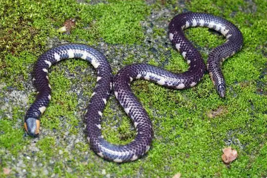
Wayanad Earth SnakeRhinophis melanoleucus Willey's Earth SnakeRhinophis porrectus
Willey's Earth SnakeRhinophis porrectus- No photo yetWoodmason's Earth SnakeUropeltis woodmasoni
- No photo yetZigzag RhinophisRhinophis zigzag
No snakes in Uropeltidae match.
About the family Uropeltidae
- Distribution: living species recorded in 2 countries, on one continent: Asia.
- Genera: Uropeltis 27, Rhinophis 24, Melanophidium 4, Plectrurus 3, Platyplectrurus 2, Plecturus 2, Teretrurus 2, Pseudoplectrurus 1.